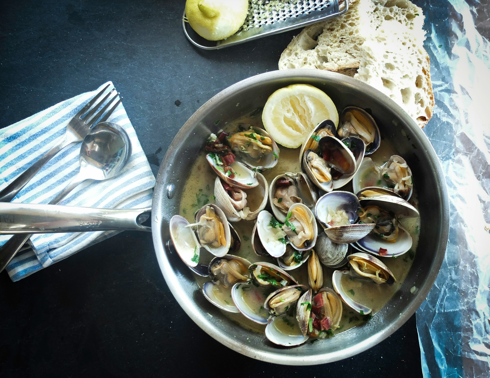
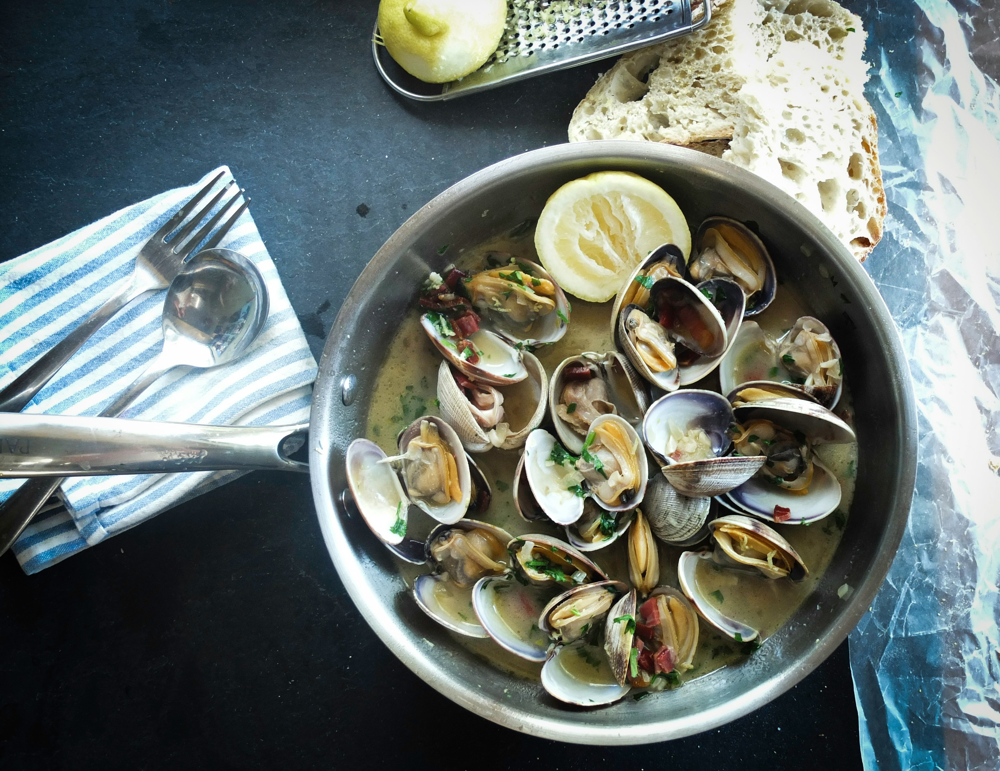
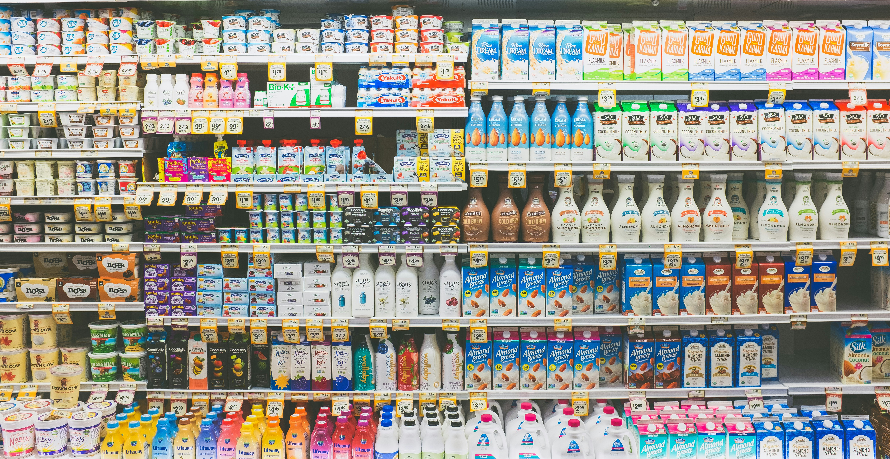

Taste of Taniti
Taniti currently has 10 restaurants. Five serve mostly local fish and rice, three serve American-style meals, and two serve Pan-Asian cuisine. Taniti has two supermarkets, two smaller grocery stores, and one convenience store that is open 24 hours a day.
Restaurants
Taniti has multiple famous restaurants known for their seafood and Pan-Asian cuisine. Try our local fish dishes you can't find anywhere else! Follow the link below to see our restaurant list to learn more.
View all
Our Favorite Dishes

 



Grocery
Get everything you need at our supermarkets, convienence stores, and local convenience stores. Check out our multiple locations that will get your family started with the essentials.
Supermarkets

Grocery Stores

Pick up local fresh produce and meats are our multiple grocery stores.
See locations!